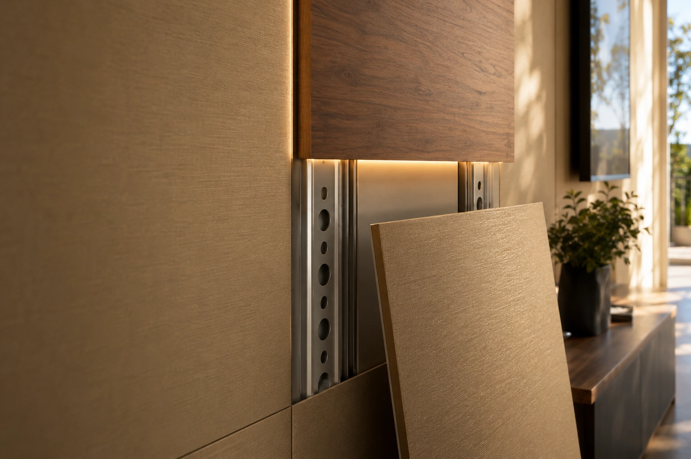
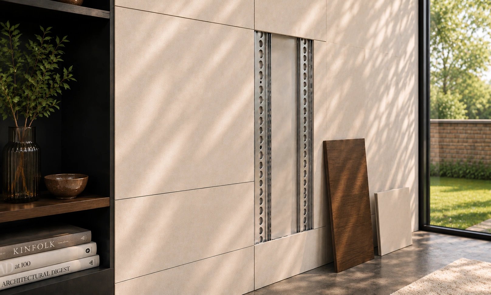

01 · Il sistema
Costruito
per evolvere.
Una parete finita fuori, aperta dentro. Pensata per cambiare senza essere rifatta.

L’infrastruttura resta.
Le superfici evolvono.
IconicWall separa la struttura dalla finitura: ciò che serve rimane accessibile, ciò che si vede può cambiare.
La parete conserva ordine, pulizia e continuità estetica, ma diventa ispezionabile, aggiornabile e pronta ad accogliere nuove funzioni.

Dentro la parete
Tutto nascosto.
Tutto accessibile.
La tecnologia scompare dietro la superficie. Cremagliere, agganci e predisposizioni restano nascosti, ma sempre raggiungibili.
Ogni pannello può essere rimosso, sostituito o aggiornato senza demolizioni, mantenendo la parete pulita e coerente con il progetto.
Profili in acciaio zincato progettati per stabilità, precisione e durata nel tempo.
I pannelli si rimuovono senza danneggiare la superficie e senza lasciare fissaggi a vista.
Cavi, alimentatori e componenti rimangono ordinati, invisibili e raggiungibili.
Si interviene solo sull’elemento necessario, non sull’intera parete.
Tecnologia proprietaria
Sistema brevettato.
Tecnologia proprietaria.
IconicWall nasce da un principio costruttivo proprietario, riconosciuto con brevetto italiano concesso.
Una struttura permanente pensata per accogliere superfici, luce, accessori e funzioni che possono evolvere nel tempo.
Approfondisci la tecnologia proprietaria →Ora scegli come
interpretarlo.
Dalla parete tecnica alla superficie decorativa, ogni configurazione parte dalla stessa infrastruttura nascosta.
Scopri le applicazioni →